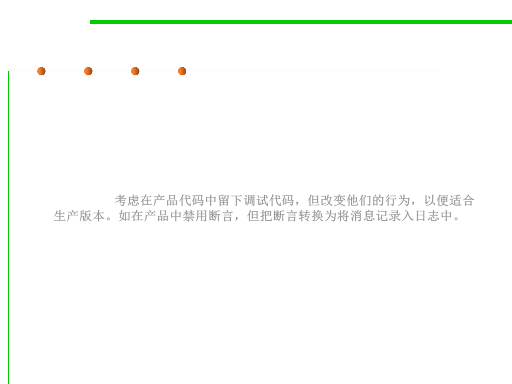

7.3 Assertions and Defensive Programming
(5)(6) Log errors and friendly error messages
▪ 5. Log errors for your technical support personnel
– Consider leaving debugging aids in the production code but changing
their behavior so that it’s appropriate for the production version.
– If you’ve loaded your code with assertions that halt the program during
development, you might considering changing the assertion routine to log
messages to a file during production rather than eliminating them
altogether.考虑在产品代码中留下调试代码，但改变他们的行为，以便适合
生产版本。如在产品中禁用断言，但把断言转换为将消息记录入日志中。
▪ 6. See that the error messages you leave in are friendly
– If you leave internal error messages in the program, verify that they’re in
language that’s friendly to the user.
– E.g., “You’ve got a bad pointer allocation!” ？？？
– A common and effective approach is to notify the user of an “internal
error” and list an email address or phone number the user can use to
report it.